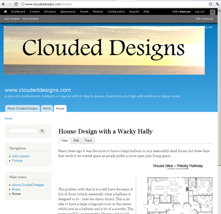

This page contains the progress of the design of this site www.cloudeddesigns.com
12/3/2012 - Fixed header background
The default Drupal themes installed by the host didnt seem to allow a background image to fill the entire header block. Looked around on drupal.org and chose the mayo theme as it "provides easy background header" - http://drupal.org/project/mayo
Downloaded the zip file to C: drive (http://ftp.drupal.org/files/projects/mayo-7.x-1.2.zip ), unzipped and ftp'ed to cloudeddesigns.com/wwwroot/themes/mayo
Went to admin panel on drupal in cloudeddesigns under appearance, and it now appears as a disabled theme
Clicked ‘Enable and set as default’
Change page width to 1100px instead of 90% which fixed resize problem of header – any colour theme except mayo default doesn’t seem to work, so leaving it like that for now.
5/3/2012 - Added content
Added about 8 articles on various designs, but still having troubles with the header image. I want the image to fill the entire screen, but adding it in the Bartel theme menu treats it as fluid and it scrolls over to the right
{kind=link}
Website seems to be sluggish - currently have logging on as well as un optimised images, but I'd have thought these days a few 400k images would be nothing. Response time from http://www.websitepulse.com
Website test results
URL tested: http://www.cloudeddesigns.com
Test performed from: Seattle, WA
Test performed at: 2012-03-06 02:14:34 (GMT +00:00)
Resolved As: 174.36.143.32
Status: OK
Response Time: 3.824 sec
DNS: 0.096 sec
Connect: 0.002 sec
Redirect: 0.000 sec
First byte: 3.719 sec
Last byte: 0.007 sec
Size: 28497 bytes
1/3/2012 - playing with Banners

28/2/2012 - Initial Version of Site
Set up Drupal and played around with the settings. The installation from the webhost was initially simple, but because it was on a Windows server there was an annoying bug on the home page.
Turns out IIS doesnt pass a parameter so I needed to make the following fix to bootstrap.inc
Was always getting a URI error on line 1401 of bootstrap.inc - googling showed that this was because IIS doesnt pass a parameter.
Changed line 1400 from
if (isset($_SERVER['argv']) {
to
if (isset($_SERVER['argv']) and !empty($_SERVER['argv'])) {
